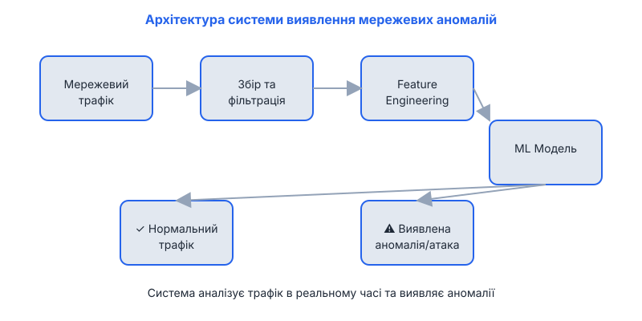

Система виявлення мережевих аномалій Network Intrusion Detection System
Дослідження та розробка інтелектуальної системи для виявлення кібератак у мережевому трафіку на основі методів машинного навчання
Актуальність теми
У сучасному цифровому світі кількість кібератак постійно зростає. За даними CERT-UA, у 2026 році кількість інцидентів зросла на 60%. Традиційні системи захисту (сигнатурні IDS) не завжди здатні виявити нові, невідомі раніше атаки (zero-day exploits).
Саме тому розробка інтелектуальних систем виявлення аномалій є критично важливою для забезпечення кібербезпеки сучасних організацій. Такий підхід дозволяє виявляти не тільки відомі атаки, але й нові, невідомі раніше загрози, аналізуючи відхилення від нормальної поведінки мережевого трафіку.
Мета дослідження
Розробка ефективної системи виявлення мережевих аномалій для підвищення рівня захисту комп'ютерних мереж від сучасних кіберзагроз.
Основні завдання
- Аналіз сучасних методів виявлення мережевих аномалій та існуючих IDS систем (Snort, Suricata, Zeek)
- Збір та попередня обробка даних мережевого трафіку (NSL-KDD, CIC-IDS-2017, CSE-CIC-IDS-2018)
- Розробка та порівняння моделей (Random Forest, XGBoost, Neural Networks) для класифікації мережевих атак
- Створення прототипу системи виявлення аномалій на Python з використанням бібліотек scikit-learn, TensorFlow
- Оцінка ефективності розробленої системи на реальних даних та порівняння з існуючими рішеннями
Методологія дослідження

- Збір даних мережевого трафіку
- Попередня обробка та нормалізація
- Виділення ознак (feature engineering)
- Валідація та тестування
- Інтеграція в прототип IDS
Очікувані результати
Програмний продукт
Прототип системи виявлення мережевих аномалій з відкритим кодом на Python, який можна використовувати для тестування та подальшого розвитку
Наукова стаття
Публікація результатів дослідження у фаховому виданні з описом запропонованої методики та порівняльним аналізом ефективності
Методологія
Розробка методики виявлення аномалій з високою точністю (Accuracy > 95%) та низьким рівнем хибних спрацьовувань
Датасет
Підготовлений та розмічений набір даних для навчання моделей виявлення мережевих аномалій
Контакти
Сумський Державний Університет
Факультет інформаційних технологій
Кафедра Інформатики
Над проєктом працюють:
Студент: Андрій Мірошніченко
Група: ІНз-21с
Науковий керівник: П'ятаченко Владислав
Email: andreymail428@gmail.com
GitHub: phantom82git/network_ids
Рік: 2026